bekasi is wonderful
kota patriot dengan wisatanya
jelajah sekarangKota Bekasi merupakan salah satu kota yang terdapat di provinsi Jawa Barat, Indonesia. Nama Bekasi berasal dari kata bagasasi yang artinya sama dengan candrabaga yang tertulis dalam Prasasti Tugu era Kerajaan Tarumanegara, yaitu nama sungai yang melewati kota ini. Kota ini merupakan bagian dari megapolitan Jabodetabek dan menjadi kota dengan jumlah penduduk terbanyak keempat di Indonesia. Saat ini Kota Bekasi berkembang menjadi tempat tinggal kaum urban dan sentra industri. Kota bekasi juga dijuluki sebagai Kota Patriot
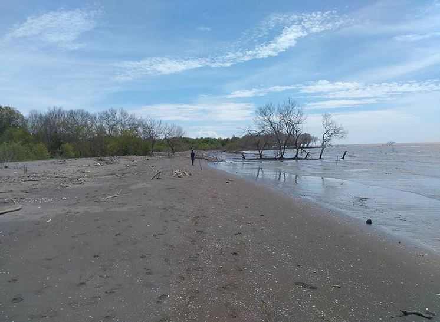
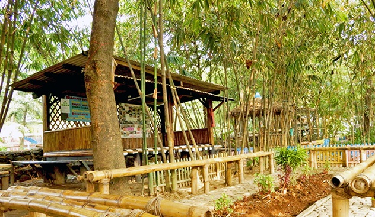
lokasinya ada di Jl. RA Kartini rt 04/26, Kel.Margahayu, Kec.Bekasi Timur, Kota Bekasi.
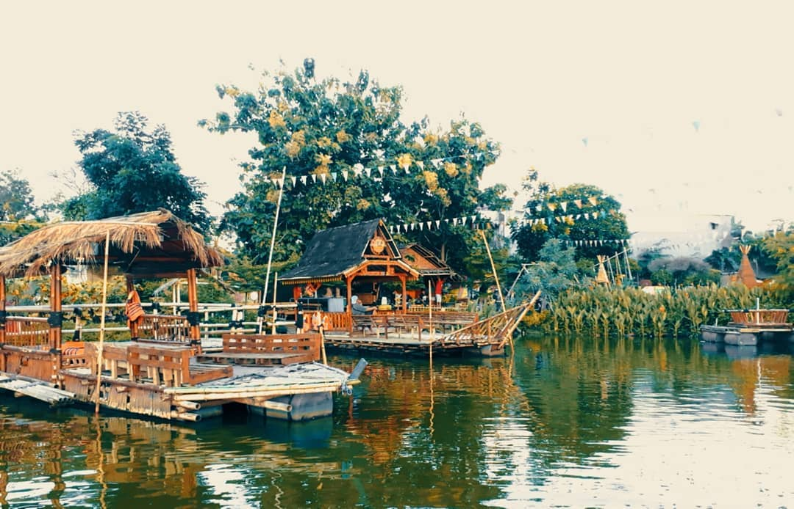
Wisata ini lokasinya ada di RT.005/RW.002, Bojong Menteng, Kec. Rawalumbu, Kota Bks, Jawa Barat 17117
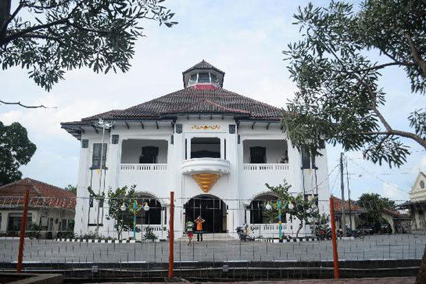
Wisata bersejarah ini letaknya ada di Jl. Sultan Hasanudin No.39, Setiadarma, Kec.Tambun Sel, Kab.Bekasi.
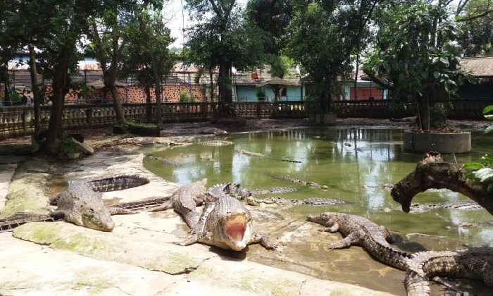
wisata ini ada di Jl. Raya Serang Cibarusah, Desa Sukaragam, Bekasi, Jawa Barat.
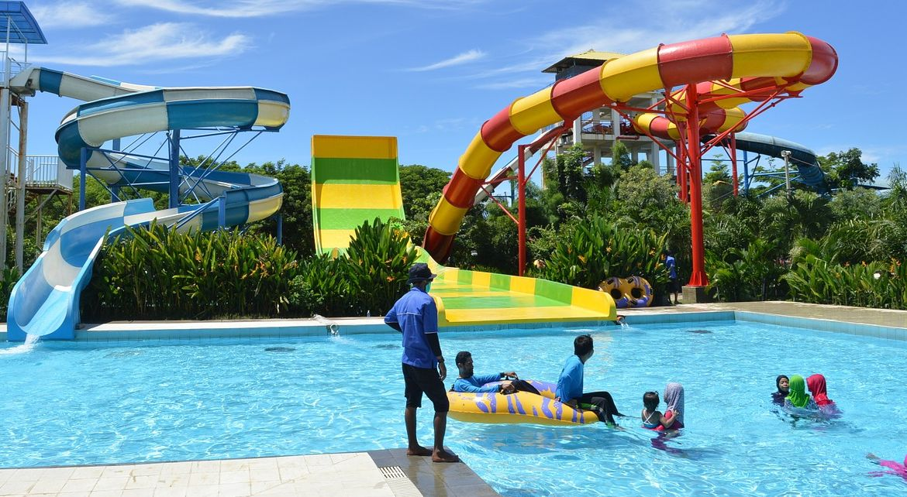
Wisata air ini berada di Jl. Madiun Kav. 115, Lippo Cikarang, Cibatu, Cikarang Sel, Bekasi, Jawa Barat
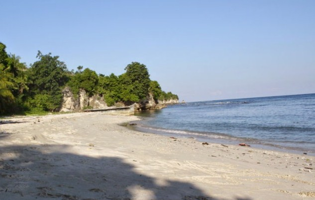
Salah satu pantai yang ada di Bekasi.
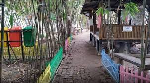
Wisata dengan nuansa alam.
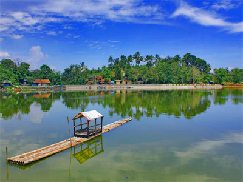
Tempat wisata bernuansa perahu.
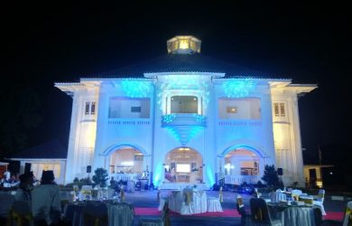
Wisata bersejarah dengan bangunan zaman Belanda.
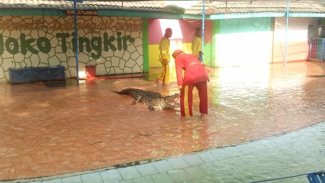
Wisata penangkaran buaya terbesar se-Asia.
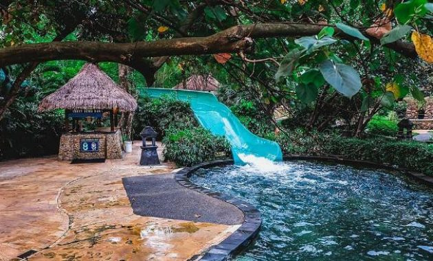
Tempat wisata air kekinian bersama keluarga.